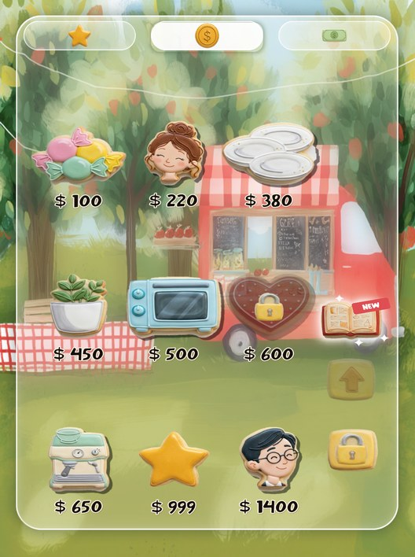
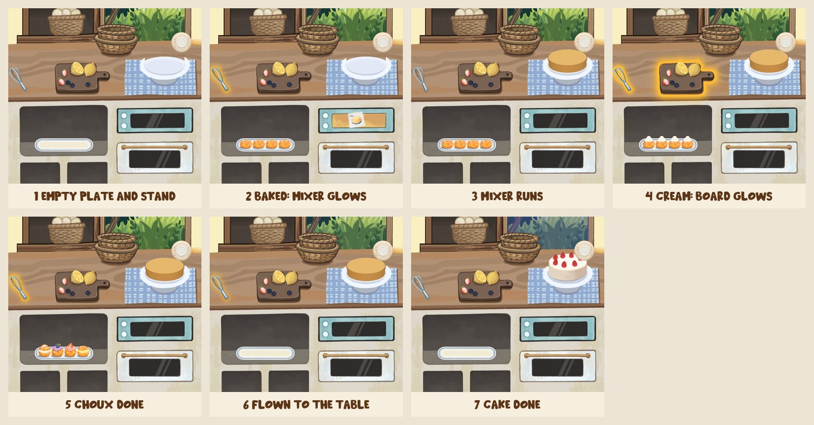
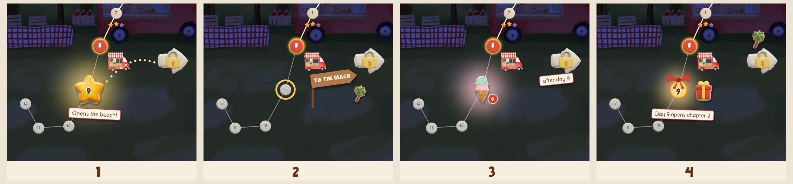
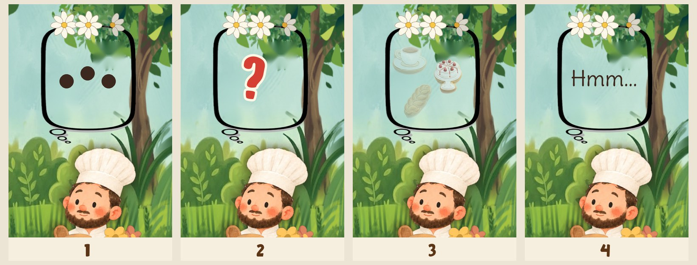
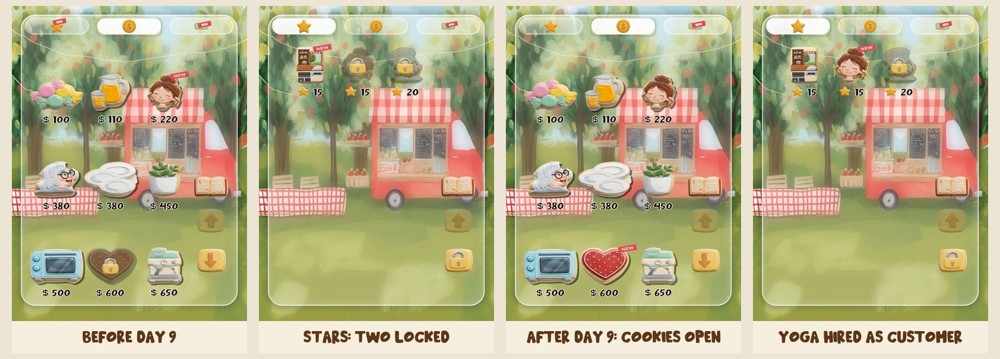
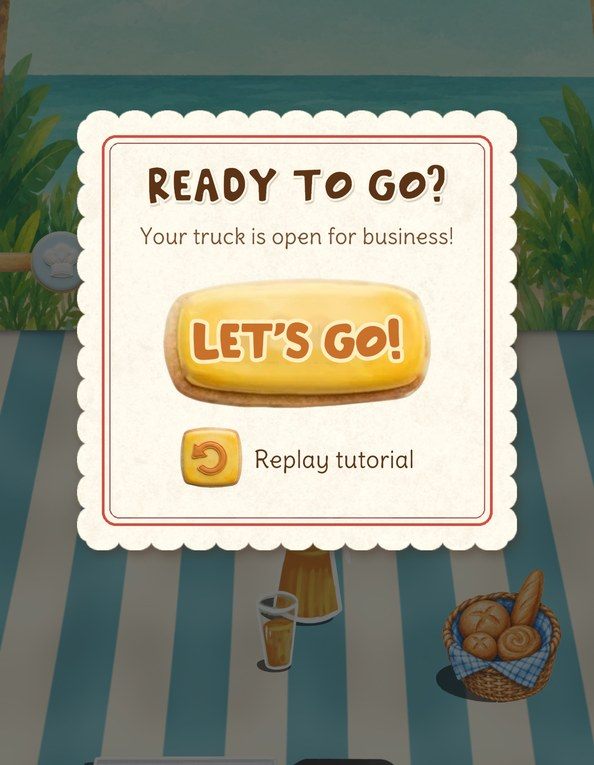
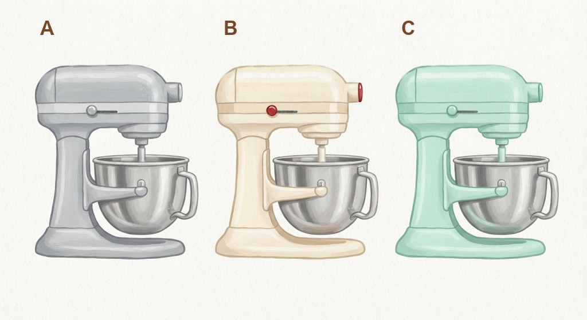

Food Truck Cafe
19 November. 2026.11.18 is live on the App Store; test build 2026.11.19 (0) in TestFlight.
1Next
You
Release 2026.11.20 is submitted (20 Nov, 08:25), waiting for Apple's review; it goes to the store by itself once approved.
Q&A: three kitchen-flow questions; how chapter 2 opens after day 9; the store's new header.
Current: the kitchen flow; pick a day-9 look and a thinking sign; the shop locks.
Me
The kitchen flow runs with placeholders (Current). Next on your word: a test build, the mixer picture, the real frames from ChatGPT and Gemini.
2Q&A
Kitchen flow: my questions (I build with the first answer of each unless you tick another)
- Cake steps. As I understand it: oven → a sponge appears on the cake stand → mixer glows, tap, the sponge gets its cream → fruit board glows, tap, cutting → the finished strawberry cake shows for a moment and flies to the table, the stand is empty again.
- Choux and cake both waiting for the mixer (or the board): one tap does one dessert, the one that has waited longest; a second tap does the other.
- A plate that is still busy: the oven does not take a new choux bake while choux are on the plate unfinished (same for the cake stand).
- Placeholder times: mixer 2.5 s, cutting 2 s (shorter with the kitchen upgrade). The whisk stands in for the mixer until its picture exists.
Chapter 2 opens after day 9: how should it work?
- Today a save counts finished days in one line, so the beach starts only after day 12. With the new rule, days 10 to 12 and the beach days are open at the same time; I will give each chapter its own count of finished days.
- A (my pick): after day 9 the arrow to the beach unlocks with a small celebration; the player chooses. Days 10 to 12 stay playable whenever they like, and each page of the map shows its own next day.
- B: after day 9 the game moves to the beach by itself; days 10 to 12 are optional extras to come back to.
- Already built: the shop's Cookies card unlocks when day 9 is finished.
What are "Header" and "Search Results" on the release page? They are empty for our game.
- They are new, optional slots from Apple ("creative assets", shown from iOS 27): a picture or short looping video at the very top of our store page (Header), and a picture shown beside the game in search (Search Results).
- Empty is fine: the page looks as it does now, and search keeps showing our video and screenshots. Nothing is missing from the release.
- They are a chance to look better: one clear picture of the truck and the table, no prices, readable small. Apple gives templates with safe areas. They go through review like screenshots.
The drag-to-arrange animation in the kitchen: do we have it in the game scene too? How and when does it play?
- Yes, on the table too. Both belong to one lesson, on day 2 only (the first day a player arranges; day 1 comes ready-arranged).
- Table: when day 2's arranging starts, the banner "Drag to arrange your table" shows and a hand carries the real coffee machine to the middle of the table and back, once.
- Kitchen: when the kitchen opens during that same arranging time (by the pull handle, or by itself after Ready on the table), the banner reads "Drag to arrange your kitchen" and the hand carries the coffee bags down to the counter and back, once.
- A touch anywhere stops the hand and puts the thing back. If the menu book interrupts it, it plays again when that place shows again.
- Once day 2's Ready is done, the lesson never comes back.
The sale price of each item
- Chapter 1: coffee $10, bread $15, apple $20, juice $20, cookies $30, strawberry cake $35 a slice, choux $35.
- Chapter 2: coconut $30, ice cream $15 per scoop (a three-scoop glass is $45).
- Plus a tip: price × seconds left on the order × 10 % (some customers tip more). A $30 order served with 6 seconds left pays $18 in tips.
- A replayed day pays only part of this (unchanged).
How long each kitchen item takes
- Ovens: cookies 6 s, bread 8 s, choux 10 s, cake 15 s.
- Apples (chapter 1) and coconuts (chapter 2): the tree or palm grows them back 8 s after the last one is picked.
- Blender (ice cream refill): 5 s (four flavours of 1.1 s, then 0.6 s settling).
- Waffle machine: about 2.4 s (1.1 s of steam, then the lid opens and the bowls come out).
- Coffee bags and juice: no wait, a tap refills at once.
- With the Kitchen upgrade (15 stars) every wait above is a quarter shorter: cookies 4.5 s, bread 6 s, choux 7.5 s, cake 11.3 s, apples and coconuts 6 s, blender 3.9 s, waffles 2.1 s.
Do we show locked items in the shop, e.g. cookies in chapter 1?

- Yes: in chapter 1 the Cookies card shows at $600 as the heart cookie with a yellow padlock. A tap does nothing; it opens when chapter 2 starts.
- Coconut has the same lock for chapter 2, but it is a chapter 2 food, so in chapter 1 it does not show at all.
- Foods of the other chapter (ice cream in chapter 1; apples and coffee in chapter 2) are not in the shop.
3Current
Release 2026.11.20 (build 0) submitted with your What's New, seven iPhone and seven iPad screenshots and the new video.
Kitchen flow for choux and cake: running, with placeholder pictures. In the project, checked in the editor; no test build yet.

- With choux or cake on the menu the empty choux plate and the empty cake stand stand in the kitchen and can be arranged like the other pieces. The plate starts in the opening under the counter, because the counter is full; drag it where you like.
- Choux: oven → plain choux on the plate → the mixer glows, a tap, it runs 2.5 s → cream → the fruit board glows, a tap, 2 s → the finished choux show for a moment, fly to the kitchen's handle, the table is refilled, the plate is empty.
- Cake: the same on the cake stand: sponge → cream → finished cake → table.
- The oven takes no new choux (or cake) while its plate is busy. With both waiting, one tap does the one that waited longest. Pause stops the steps; the kitchen upgrade shortens them.
- Not done yet: the cutting animation and the mixer are stand-ins (the board hops, the whisk rocks); the test robot that plays whole chapters does not know the new taps.
Day 9 on the chapter 1 map: four ideas. Mock-ups; nothing built.

Thinking before the order: four ideas. The customer arrives, the bubble opens with a thinking sign, then the foods pop in. Patience starts only when the order shows. Mock-ups; nothing built.

Shop: locks and NEW on tabs, in the project.

- NEW on a tab when a card under it becomes buyable for the first time; it goes once that tab has been looked at.
- Locked cards show with a padlock and take no taps: Cookies until day 9 is finished; the yoga lady's star card until she is bought as a customer; the new Chef star card (20 stars) stays locked for now.
"Ready to go?" card: your pick 1, in the game. The tutorial's last card on the doily paper; LET'S GO! and the replay cookie press and crunch like the other cookie buttons; the words "Replay tutorial" can be tapped too.

4MVP
Release 2, this weekend: the kitchen flow, with a baking mixer. Waiting for your flow.
The mixer, like your photo but cuter.

5Backlog
Nothing open.
6Analysis
Nothing open.
7Marketing
Nothing open.